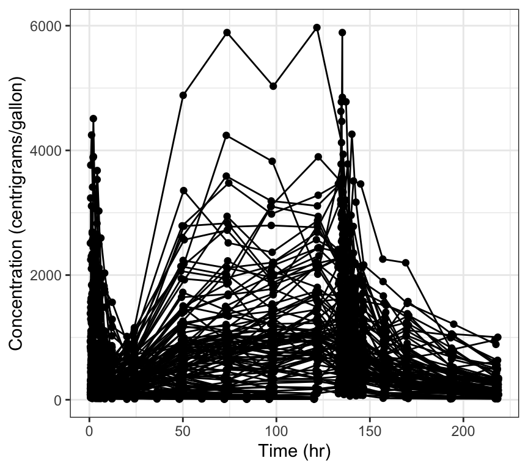

10.1 Latex (including Greek letters) in axis title
10.2 Latex in pairs plot
10.3 Latex in wrapped plots

10.4 Modify x-axis

10.5 Modify y-axis
10.6 Flip coordinates when labels get cramped
If this is too cramped
Try this
11 Add layers
11.1 smooth

11.2 abline


11.3 Drop extra layers


11.4 Modify layer specs
For example, change the values of argument for geom_smooth

11.5 Drop all extra layers
12 Custom breaks
Default breaks: ::: {.cell}

:::
Break every 3 days ::: {.cell}

:::
Custom breaks and limits ::: {.cell}

:::
13 Extra reference lines to [C]WRES plots

14 Replicate look and feel
14.1 Theme
14.2 Plain
14.3 Smooth
14.4 Abline
14.5 Horizontal reference line
14.6 Rotate x and y axis labels
14.6.1 Specify the angle

14.6.2 Rotate to vertical
We are typically rotating the tick labels on the x-axis and frequently it is convenient to ask for a totally vertical rendering
15 Standard axis titles
[1] "TIME//Time {xunit}"[1] "TAD//Time after dose {xunit}"[1] "TAFD//Time after first dose {xunit}"[1] "RES//Residual"[1] "WRES//Weighted residual"[1] "CWRES//Conditional weighted residual"[1] "CWRESI//CWRES with interaction"[1] "NPDE//NPDE"[1] "DV//Observed {yname}"[1] "PRED//Population predicted {xname}"[1] "IPRED//Individual predicted {xname}"16 Log breaks
[1] 1e-10 3e-10 1e-09 3e-09 1e-08 3e-08 1e-07 3e-07 1e-06 3e-06 1e-05 3e-05
[13] 1e-04 3e-04 1e-03 3e-03 1e-02 3e-02 1e-01 3e-01 1e+00 3e+00 1e+01 3e+01
[25] 1e+02 3e+02 1e+03 3e+03 1e+04 3e+04 1e+05 3e+05 1e+06 3e+06 1e+07 3e+07
[37] 1e+08 3e+08 1e+09 3e+09 1e+10 3e+10